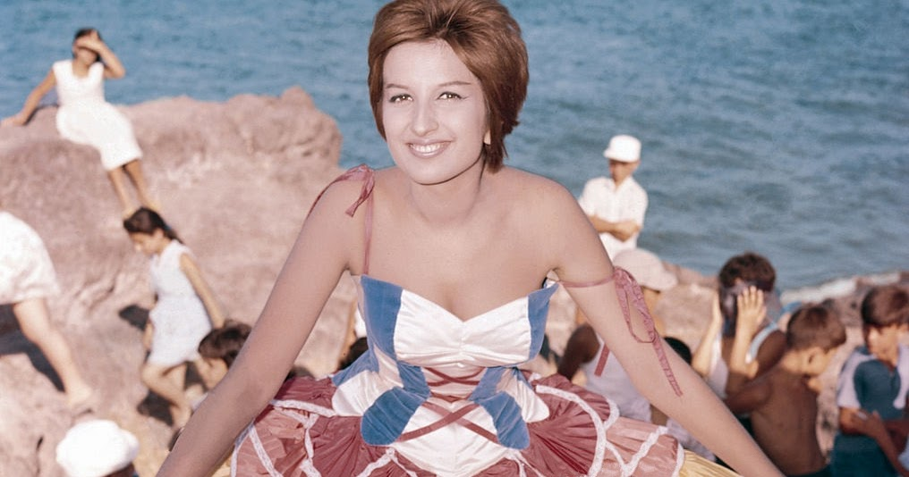

Titolo: Dolcenera
Autore: Fabrizio De andrè
Album: Anime salve
Anno: 1995
Questo brano , firmato De Andrè è prima che musica, poesia. Malinconia, incalzante paranoia di un amante frustato e tormentato da un amore non corrisposto, viscerale. La donna, l'amore per lei lo travolgono come un torrente irrefrenabile , come, per l'appunto acqua. Dolcenera, bella, quanto imperturbabile, cinica. Inframezzi musicali restituiscono alla sublimità del testo le note di una passionale ballata tradizionale che profuma di mediterraneo. Il dialetto ligure fa da padrone, terra natia dell'autore maestro.
Note da bere in compagnia di un calice di Valpolcèvera rosso doc .
Titolo: Sfiorivano le viole
Autore: Rino Gaetano
album: mio fratello è figlio unico
anno: 1976
Timido e tenero ricordo di una trepidante ma lenta attesa. Questa attesa fotografata, e dilatata in un passato ormai lontano svanito evanescente nella calura estiva . Note dolci, languide e malinconiche forgiano questo brano nostalgico.
Note da bere in compagnia di un daiquiri al bergamotto in tutte le sue varianti agrodolci e fruttate.
Titolo: Je so pazzo
Autore: Pino Daniele
album: Pino Daniele
anno: 1979
Sfacciato e irriverente. Un elogio alla follia per così dire. Tra le righe beffarda critica sociale tra le note intrecciate di tarantella, blues e rumba, taramblù come l'autore stesso aveva ribattezzato il suo brano.
Note da berein compagnia di un calice di vino rosso “della casa” corposo e intenso.
Titolo: Attenti al lupo
Autore:Ron
Cantante: Lucio Dalla
anno:1990
Canzone inevitabilmente evocativa del mondo delle fiabe. È un brano d'amore, un amore rassicurante, nota di dolcezza tra le asperità ed avversità che si fan piccine livin' together.
Note da Bere in compagnia di una pinta di birra meglio se rossa.
Titolo: Cocciu d' amuri
Autore: Lello Analfino, Tinturia
Anno:2014
Sin dai primi istanti erompe il calore della sicilia, anzi di Palermo. Questo brano non parla di amore, lo dichiara. Una toccante ed emozionante serenata che trasporta l'ascoltatore in uno scorcio di autentico quanto raro sentimento, protagonista indiscusso dell'intero brano.
Note da bere in compagnia di un calice di vino rosso terre siciliane igt.
Titolo: Tintarella di luna
Autore:de filippi
cantante: Mina
anno: 1942
Estate degli anni 40. leggero,fresco, frizzantino questo brano. Uno swing travolgente che chiama le danze più in voga in quegli anni.
Note da bere in compagnia di un The Burning Mandarin Martini , speziato, piccante ed agrumato.

Titolo: Cieli d'Irlanda
Cantante: Fiorella Mannoia
Autore: Massimo Bubola
Album:I treni a vapore
Anno:1972
Folklore e colore. Verde, blu.Questo brano dalla grande potenza evocativa promana suggestioni e scorci di viaggio in terra celtica. Il ritmo incalzante e leggero trasmette carica ed energia per danzare, correre, librare sulle cose, sfiorarle senza mai poggiarsi. Indubbiamente fresco, esuberante.
Note da bere in compagnia di un ottimo green irish spritz con p31 e sidro di mela, dolce e asprigno allo stesso tempo!